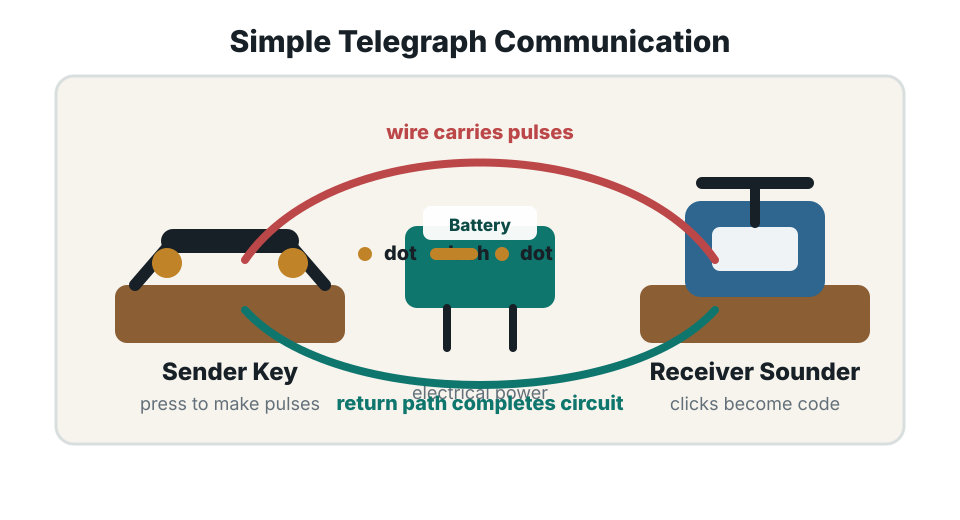

Sender
The device that creates and sends data, such as a phone, laptop, or server.
Data Communication Assignment
A unique guide to how messages become signals, move through media, follow protocols, and arrive as useful information on another device.
Profile
Student ID: Your ID
I am a student learning web development and computer networking. This notebook summarizes what I have studied in data communication, including how messages become signals, how networks are organized, and why protocols make reliable communication possible.
I am inspired by how simple ideas like bits, signals, and addresses can connect people, businesses, schools, hospitals, and entire communities. Data communication shows that technology is most powerful when it helps people share knowledge faster and more reliably.
Section 1
The device that creates and sends data, such as a phone, laptop, or server.
The information being shared, including text, images, sound, video, or files.
The path data travels through, such as copper cable, fibre optic cable, or radio waves.
The device that accepts the data and converts it into useful information.
The rules that control format, timing, delivery, and error handling.
The sender changes a message into a signal. Text, images, audio, and video are represented as bits before transmission.
The signal travels through copper wire, fibre optic cable, or wireless channels. Noise, distance, and interference can affect quality.
The receiver changes the signal back into usable data and checks for errors before the application displays it.
Section 2
Network models organize communication into layers. Each layer has a specific responsibility, making it easier to design, troubleshoot, and understand networks.
Section 3
| Type | Examples | Strength | Common Use |
|---|---|---|---|
| Twisted Pair | Cat5e, Cat6 | Affordable and common | School, home, and office LANs |
| Fibre Optic | Single-mode, multi-mode | Very high speed over long distance | Internet backbone and data centres |
| Wireless | Wi-Fi, Bluetooth, 4G, 5G | Mobility and flexible coverage | Phones, laptops, IoT, mobile networks |
Section 4

The telegraph was one of the first practical long-distance data communication systems. A sender pressed a key to create electrical pulses, the pulses travelled along a wire, and a receiver converted them into Morse code.
Section 5
This video plays directly inside the page tab and helps reinforce the basic ideas behind data communication and networking.
Reflection
I am inspired by the way data communication turns invisible signals into real human connection. A message can leave one device as electrical pulses, light, or radio waves and become a lesson, a video call, a bank transaction, or emergency information somewhere else.
Resources